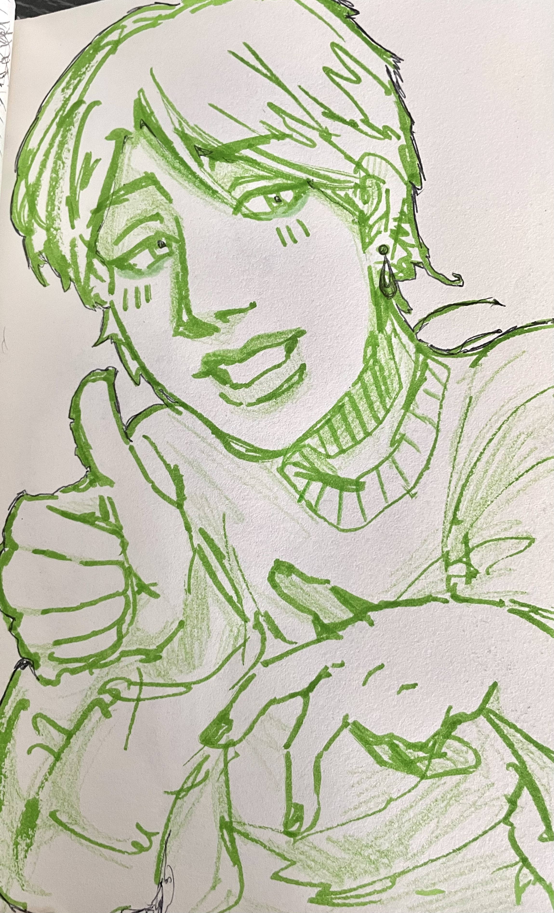

I don't draw digitally as much as I used to, so there is a pretty big gap in terms of the amount of traditional art and digital art I produce.
Digital Art:

Traditional Art:



I don't draw digitally as much as I used to, so there is a pretty big gap in terms of the amount of traditional art and digital art I produce.